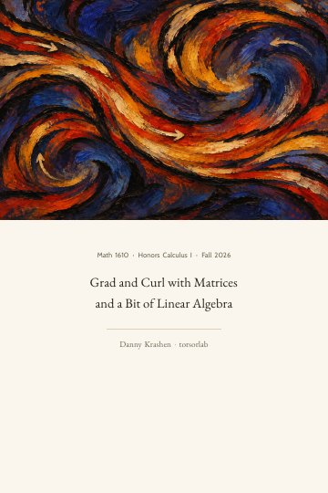

Grad, curl, and div, and their fundamental theorems. These notes introduce the divergence, show why the curl of a gradient and the divergence of a curl are zero, state the fundamental theorems of Green, Stokes, and Gauss, and close with differential forms, where all of these become one derivative and one theorem. With exercises throughout.

When is a vector field the gradient of a function? These notes answer the question with matrices: the derivative of a vector field, its curl, why gradients have zero curl, and why, on a disk, zero curl means gradient. They begin with a review of the linear algebra needed, and include exercises throughout.